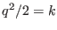

Next: The dynamic kb-equation Up: The turbulence model Previous: The dynamic k-equation Contents
INTERFACE:
subroutine q2over2eq(nlev,dt,u_taus,u_taub,z0s,z0b,h,NN,SS)DESCRIPTION:
The transport equation for the TKE  can be written as
USES:
use turbulence, only: P,B use turbulence, only: tke,tkeo,k_min,eps,L use turbulence, only: q2over2_bc, k_ubc, k_lbc, ubc_type, lbc_type use turbulence, only: sq use util, only: Dirichlet,Neumann IMPLICIT NONEINPUT PARAMETERS:
number of vertical layers integer, intent(in) :: nlev time step (s) REALTYPE, intent(in) :: dt surface and bottom friction velocity (m/s) REALTYPE, intent(in) :: u_taus,u_taub surface and bottom roughness length (m) REALTYPE, intent(in) :: z0s,z0b layer thickness (m) REALTYPE, intent(in) :: h(0:nlev) square of shear and buoyancy frequency (1/s^2) REALTYPE, intent(in) :: NN(0:nlev),SS(0:nlev)REVISION HISTORY:
Original author(s): Lars Umlauf
Karsten Bolding 2012-12-28